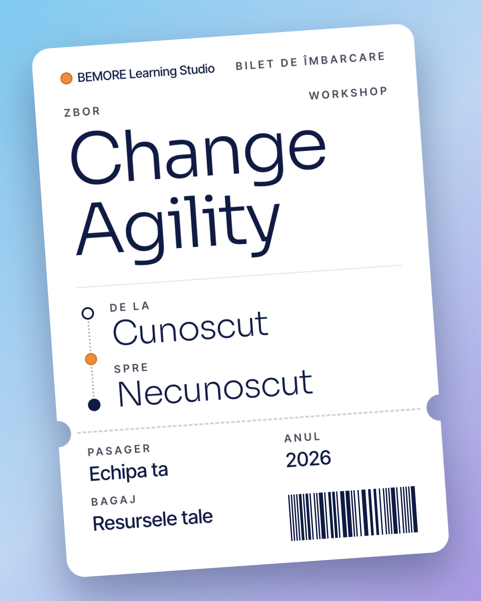
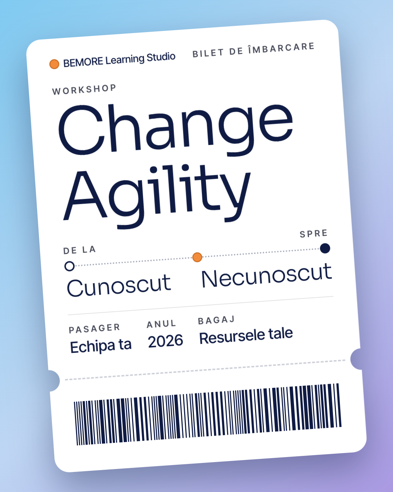
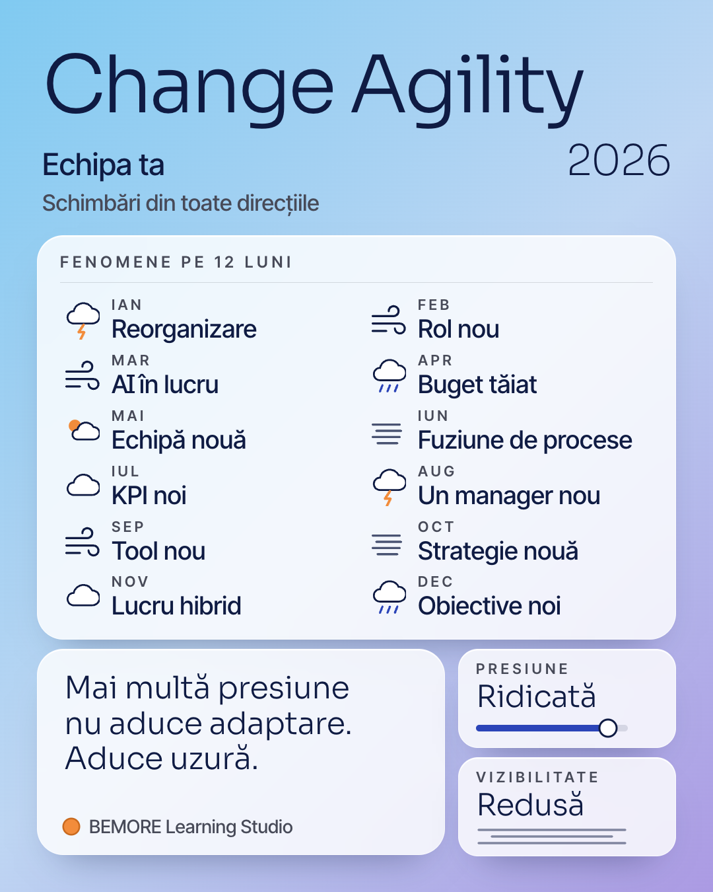
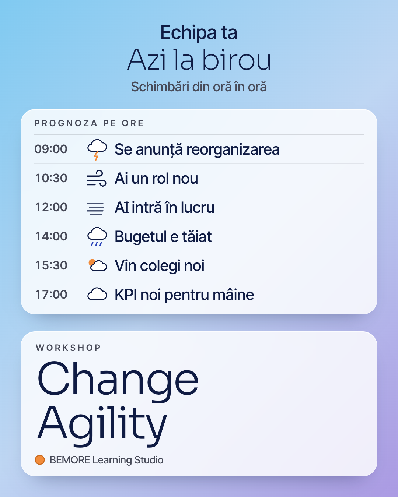
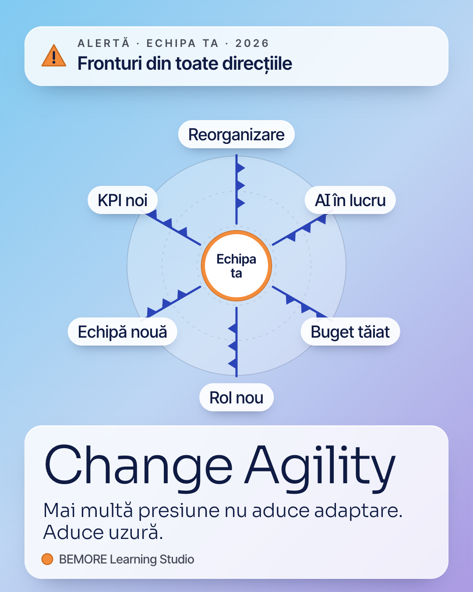
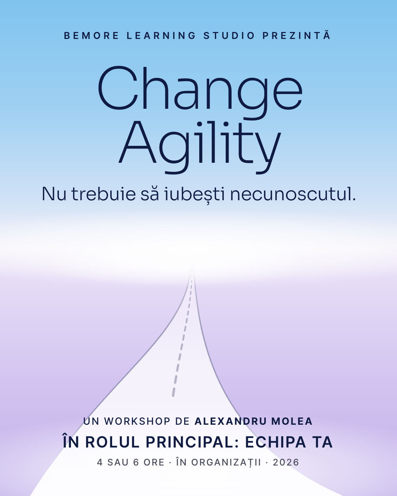

Alexandru Moleaacum
Anul acesta, schimbările n-au mai venit pe rând, ci deodată. Asta ne-a îndreptat atenția spre capacitatea noastră de a ne reinventa. …mai mult

Postarea Change Agility · imaginea · rundele 2 și 3
Șase medii diferite, 1080 × 1350 (portret, 4:5), toate în brandul BEMORE, pe Lumină. Fiecare apare la mărimea din feed pe un telefon de 375 px, sub începutul 1 din v4-ul Sofiei. Pe imagini stau doar fraze aprobate de Alex și numele cursului. Runda 1 e în arhiva/postare-change-agility-2026/.
Runda 3 · după alegerea lui Alex · recomandarea Ioanei
„Change Agility” stă pe cotor, la 64 px în sursă: în feed iese ~22 px, prea mic.
Anul acesta, schimbările n-au mai venit pe rând, ci deodată. Asta ne-a îndreptat atenția spre capacitatea noastră de a ne reinventa. …mai mult
Numele cursului e „zborul”, sus, sub antet (158 px, ~55 px în feed). Ruta Cunoscut → Necunoscut rămâne verticală, mai mică. Pasagerul, anul și bagajul trec pe cotor, lângă codul de bare.
Anul acesta, schimbările n-au mai venit pe rând, ci deodată. Asta ne-a îndreptat atenția spre capacitatea noastră de a ne reinventa. …mai mult

Numele cursului e elementul dominant (178 px, ~62 px în feed). Dedesubt, ruta pe orizontală, ca pe un boarding pass: Cunoscut în stânga, Necunoscut în dreapta, punctul portocaliu la mijlocul drumului. Câmpurile pe un rând, codul de bare pe cotor.
Anul acesta, schimbările n-au mai venit pe rând, ci deodată. Asta ne-a îndreptat atenția spre capacitatea noastră de a ne reinventa. …mai mult

Vremea pe luni nu spunea nimic despre echipe (Alex: „prognoza nu e foarte relevantă”).
Anul acesta, schimbările n-au mai venit pe rând, ci deodată. Asta ne-a îndreptat atenția spre capacitatea noastră de a ne reinventa. …mai mult

„Change Agility” e titlul mare al aplicației (ca „Vremea” din lista de orașe), „Echipa ta” e locul. Fiecare lună are un fenomen: o schimbare reală. Jos, fraza lui despre presiune, lângă cele două indicatoare care îi plăceau din D: Presiune ridicată, Vizibilitate redusă.
Anul acesta, schimbările n-au mai venit pe rând, ci deodată. Asta ne-a îndreptat atenția spre capacitatea noastră de a ne reinventa. …mai mult

O singură zi, pe ore: la fiecare oră altă schimbare. Cel mai aproape de ce trăiește omul care citește. Jos, numele cursului mare, pe două rânduri. Fără frază: ziua spune destul.
Anul acesta, schimbările n-au mai venit pe rând, ci deodată. Asta ne-a îndreptat atenția spre capacitatea noastră de a ne reinventa. …mai mult

Ecranul de alertă: pe radar, șase fronturi vin deodată spre echipa ta, din toate direcțiile. Triunghiurile arată încotro merg. Jos, numele cursului pe un rând și fraza despre presiune.
Anul acesta, schimbările n-au mai venit pe rând, ci deodată. Asta ne-a îndreptat atenția spre capacitatea noastră de a ne reinventa. …mai mult

Recomandarea din runda 2 (înainte de alegerea lui Alex)
Poza lui Alex de pe site. Aleea din spatele lui se pierde în neclar (necunoscutul), iar el stă liniștit în ea. Toamna arată anul care se apropie de capăt. Fraza lui stă pe sticlă.
Anul acesta, schimbările n-au mai venit pe rând, ci deodată. Asta ne-a îndreptat atenția spre capacitatea noastră de a ne reinventa. …mai mult

Un perete plin de bilețele lipite strâmb, unul peste altul: structura, rolurile, tehnologia, felul de lucru, AI, buget, KPI noi. Doar cartonașul cu numele cursului stă drept.
Anul acesta, schimbările n-au mai venit pe rând, ci deodată. Asta ne-a îndreptat atenția spre capacitatea noastră de a ne reinventa. …mai mult

O pagină de dicționar, de aproape. Numărul paginii e 2026. Sensul 2 al cuvântului „incertitudine” e fraza lui, subliniată cu marker, iar dedesubt stă trimiterea „v. și Change Agility”.
Anul acesta, schimbările n-au mai venit pe rând, ci deodată. Asta ne-a îndreptat atenția spre capacitatea noastră de a ne reinventa. …mai mult

Ecranul unei aplicații de vreme pentru „Echipa ta”: în locul temperaturii stă anul, iar lunile au fiecare altă vreme. Presiunea e ridicată, vizibilitatea e redusă. Dedesubt, fraza lui despre presiune și uzură.
Anul acesta, schimbările n-au mai venit pe rând, ci deodată. Asta ne-a îndreptat atenția spre capacitatea noastră de a ne reinventa. …mai mult
Un bilet de îmbarcare, de la „Cunoscut” spre „Necunoscut”, cu punctul portocaliu la jumătatea drumului. Pasager: echipa ta. Anul: 2026. Bagaj: resursele tale.
Anul acesta, schimbările n-au mai venit pe rând, ci deodată. Asta ne-a îndreptat atenția spre capacitatea noastră de a ne reinventa. …mai mult
Un afiș de film: un drum care intră în ceață, titlul mare și creditele de jos. „În rolul principal: echipa ta.” Formatul de premieră se simte fără să-l spunem.
Anul acesta, schimbările n-au mai venit pe rând, ci deodată. Asta ne-a îndreptat atenția spre capacitatea noastră de a ne reinventa. …mai mult

Ce am verificat